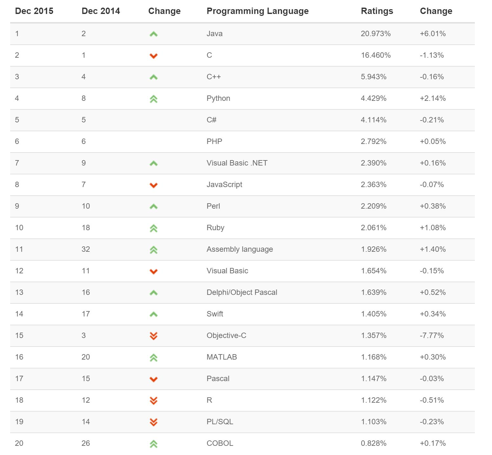
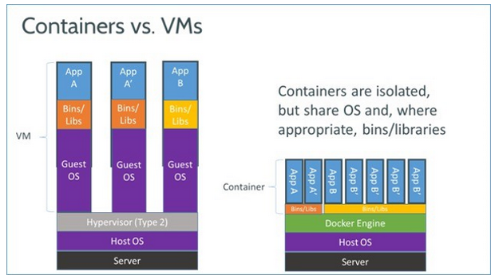
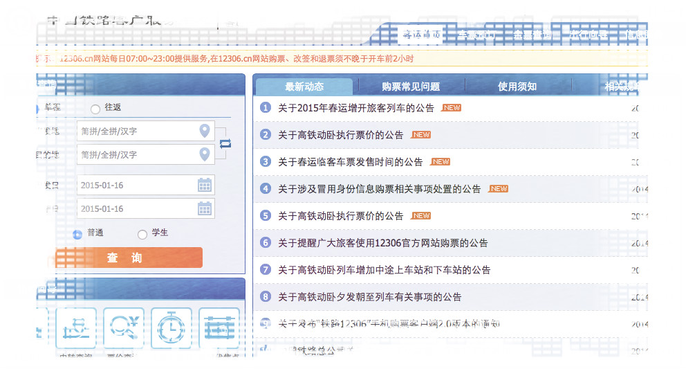

W3C 宣布：WebAuthn 成为正式 Web 标准
万维网联盟（W3C）与 FIDO 联盟近日宣布，Web 认证（Web Authentication，简称 WebAuthn）现已成为正式 Web 标准。 WebAuthn于2015年11月由W3C...
外国人竟然发明出纯透明的咖啡，新的装逼利器出现了！
咖啡是许多人提神醒脑的必备神器，考前奋战，加班加点，不管是上班族还是学生党，必不可少！不过一说到咖啡，人们对它的印象就是一杯散发着浓...
看国外“大神”程序员高大上的电脑桌
估计，大部分阅读本文的程序员都是坐在敞厅的隔断里编程。这种工作环境是最节省空间的，但未必是最节省工作能量和注意力的。程序员不喜欢开放...

TIOBE 2015年12月编程语言排行榜
毫无疑问，Java将成为今天的TIOBE年度语言。Objective-C暴跌8%似乎完全被目前最流行语言所吸收。另一个有趣的举动是Python的崛起。这是目前在...
苹果iOS的八年：如何一步步爬到了这么高
电脑需要操作系统，手机也需要，2007 年，苹果带着旗下第一款智能手机 iPhone 和第一款操作系统亮相，从而奠定了改变世界的基础。8 年时间以...

Docker到底是什么？为什么它这么火！
如果你是数据中心或云计算IT圈子的人，这一年多来应该一直在听到普通的容器、尤其是Docker，关于它们的新闻从未间断过。Docker1.0在2014年6...

你们猜对了：12306 确实是“让淘宝做的”
昨天下午，自称为阿里云程序员，同时参与了今年 12306 春运项目的知乎用户 首次披露 ，阿里自从去年年初就已经开始和铁路订票网站 12306 合...
2015年10大最火热IT技能
2015年，IT就业增长的步伐可能放缓，但是势头依旧强劲。根据Computerworld's 2015 Forecast对IT公司进行了关于IT技能雇佣的调查，24%的受访者...
看完这个，你才敢说自己会买春运火车票
又到了"香烟啤酒方便面，辣条饮料火腿肠"的春运季，在你挤上火车享受列车员"腿收一下"的温暖关怀前，车票到手了吗？搞定下面这些，让你抢...
最适合软件工程师居住的10个国家
统计方法： 1、选择10个软件工程师收入最高国家（数据来源-哪个国家程序员挣得最多?） 2、比较在这些国家的生活成本（数据来源：Eardex） 3...